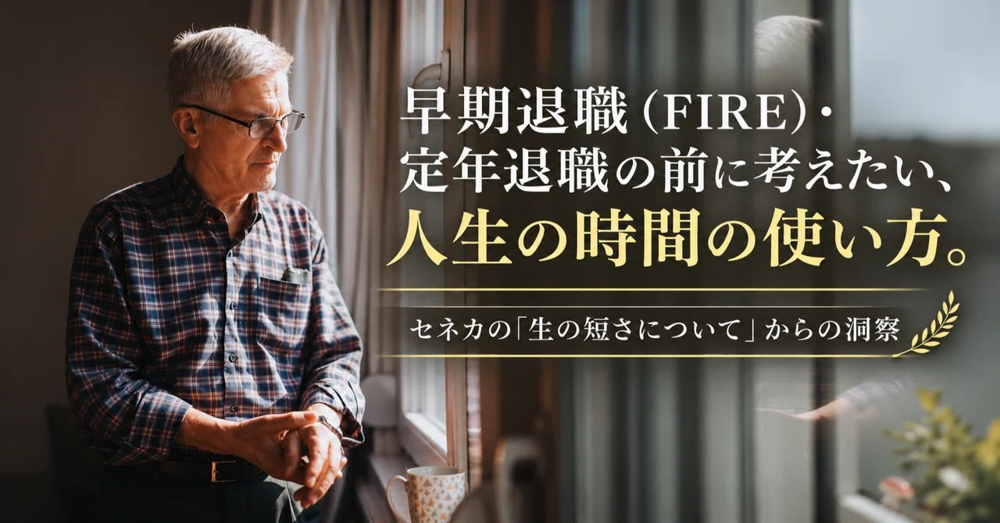
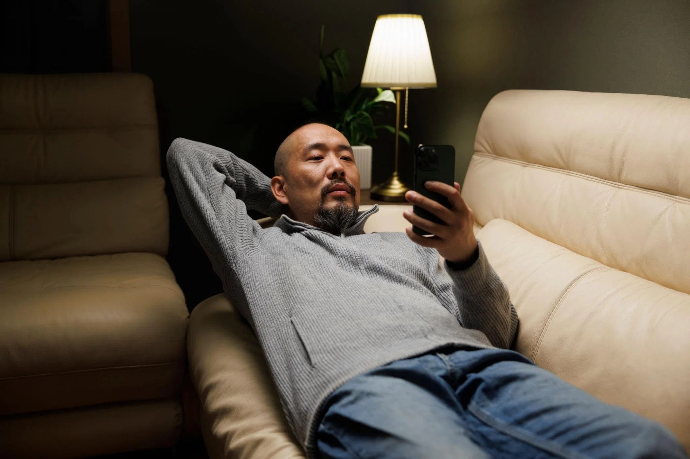
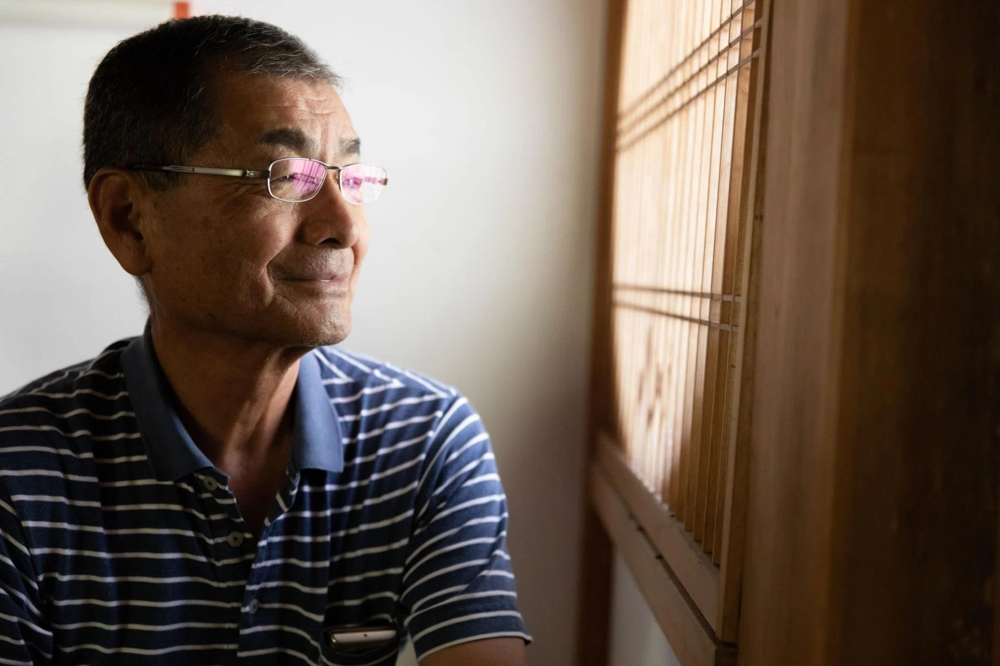
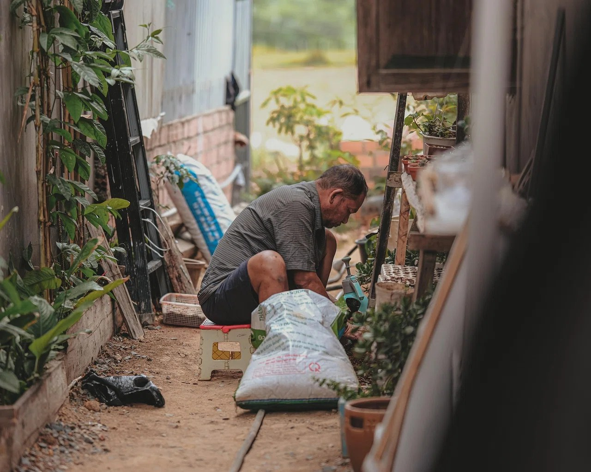

早期退職（FIRE）・定年退職の前に考えたい、人生の時間の使い方。

自由な時間を手に入れることと、自由に生きることは違います。セネカの『生の短さについて』を手がかりに、退職後の時間の使い方と、自分の人生を取り戻すために大切なことを考えます。
会社を離れて気付いた、空虚な時間の過ごし方
私は会社を離れてしばらくして、日々なんとなく時間だけが過ぎていく生活にむなしい気持ちに陥ることが増えました。
「やろうと思っていたこと、やるべきことは色々あるが、後回しにして時間だけが過ぎている。」
「SNSやスマホを見ている間に気が付いたら夕方。こんな毎日を変えなきゃ。」
「自分は、会社人間から離れて、こんな人生を過ごしたかったのだろうか？」
退職後はたっぷりと自分に残された時間で、色々“やろう”と考えていたのですが、実際にもて余すほどの時間を手に入れても、なかなか行動に移せずに、いろいろなことを後回しにして、無駄に時間だけが過ぎてしまっている。そんな生活をしている自分に対して、「こんな生活をしたかったのだろうか？」、自分の行動に疑問を感じることが多くなって行きました。
ぼーっとYouTubeを見ていると、セネカが著した「生の短さについて」という衝撃的なタイトルの動画に見入ってしまいました。自分の生活で見直すべき部分が述べられているのではないか？と考え、早速図書館で本を借りて読みました。「自分が如何に無駄な時間を過ごしているか」、「同じ悩みを多くの人が抱えてきたんだ」と言うようなことに気づきました。今は、少しずつ自分の生活を見直している段階です。今日は本を読んだ私の気付きをお伝えできればと思います。

実践して実感する人生の変化
「セネカの本を読んで、自分の時間の使い方を見直してみようと思いました。とはいえ、急に生活を変えられるわけではありません。まずは、気負わずにできることから始めています。」
いくつか試してみると、「心地よい」「長く続けられそうだ」と思えることが増えてきました。日々、心地よく過ごせている時間の割合が増えてきたように感じます。
他には、人との接し方も変わってきました。以前は、一緒に買い物に出かけて長く歩くと、疲れた顔をして相手が察してくれることを期待していました。今は、疲れたから休みたいと自分から伝えます。
何となく始めたnoteで記事を書くことも、その一つです。同じ境遇の方々の参考になればと思って始めましたが、想像していた以上に夢中になっています。記事のアイデア出し、情報収集、プログラム開発、ホームページの立ち上げなど、やることはたくさんあります。1つの記事を書き終えると、心地よい脱力感が残ります。
それから、自分が決めて、成功も失敗も「自分の責任」と考えるようにしています。私は、旅行はあまり好きではありません。これまでは誘われれば自分の意志を見ないようにして、無理にでも相手にあわせるようにしていました。現在は、「好きじゃないから行きません」と断るようになってきました。その人と疎遠になっても仕方ないと考えています。
感じている変化は、お金への不安、人間関係の悩み、時間の使い方などが挙げられます。
「こうした変化を通じて、私は自分の時間を自分で決めることが、思っていた以上に大切なのだと感じるようになりました。セネカの本を読んで、この感覚には2000年前から続く哲学的な背景があることを知りました。」
2千年前も、現代も、人間の悩みは変わらない
セネカは、古代ローマの哲学者です。
生きたのは紀元前後の1世紀。日本では弥生時代の終わりから古墳時代へと移り変わるころです。
現在のような便利な家電も、インターネットも、スマートフォンで手軽に楽しめる娯楽もありません。
それでも、人間の悩みは今とあまり変わっていなかったようです。
セネカが「生の短さについて」で強く訴えているのは、人間は自分に与えられた時間を有意義に活用していないということです。
つまり、人間には十分な時間が与えられている。しかし、その貴重な時間を無駄に過ごしてしまうため、人生はあっという間に終わってしまうというのです。
現代は、食べ物や住む場所に困ることが少なくなり、家事や仕事も便利になりました。娯楽も情報も、スマートフォン一つで手に入ります。
昔に比べれば、自分の時間を確保しやすくなったはずです。
では、私たちは与えられた時間を有意義に使っていると言えるでしょうか？
人生の本番を先延ばしにしていないか
人生の後半になってから、ようやく自分の人生を始めようとする人への指摘も多くあります。
私は、まさにこれに近い人生を送ってきたように思います。
会社という組織の歯車の一部となって毎日を過ごし、定年したらやりたいことをいっぱいやろうと考えて貯金を増やしてきました。
自分の趣味や、本当にやりたいことを考えることもなく、「仕事が趣味」「仕事が楽しい」と、自分に言い続けてきました。人に良く思われるために、他人の意見に合わせることも多かったと思います。
いつのまにか社会によって作り上げられた、「正しい社会人はこうあるべき」像に従っていたと思います。
もちろん、仕事を通じて得られたものもあります。家族を養い、資産を築くことができたのも、これまで働いてきたからです。
しかし、今振り返ると、自分の人生を楽しむことを後回しにしすぎていたのではないかと思います。
FIREや充実した老後を目指す人は、将来の自由のために、今の時間を使って資産を築いています。それ自体は悪いことではありません。
ただし、将来のために現在を犠牲にし続け、ようやく自由になったときに、自分が何をしたいのか分からない。いつのまにか、新たなことに挑戦する気力・体力が残されていない。
そんな状態になってしまったら、少し残念ではないでしょうか。

人生を浪費させる時間の使い方
セネカは、人生を浪費している人々について、かなり厳しい言葉で指摘しています。
特に印象に残ったのは、次の3つです。
① 快楽への浪費
酒や色欲など、刹那的な快楽だけに時間を費やし、他の本質的な事柄を顧みない人々を批判しています。
楽しむこと自体が悪いのではありません。問題なのは、快楽に時間を支配され、自分の人生を振り返ることもなく過ごしてしまうことです。YouTubeやインスタグラムを何となく見てしまって、長い時間を浪費させてしまっている人も多いのではないでしょうか？
② 社会的義務と虚栄への浪費
金銭の計算、上下関係の付き合い、義務化した宴会などに追われ、自分自身のために一息つく暇さえない生活です。
現代に置き換えれば、会社での出世や評価を気にして、必要以上に残業したり、休日まで職場の付き合いに費やしたりする生活にも通じると思います。
③ 浪費の末路と精神の疲弊
欲望を制御することも満足させることもできない。
その結果、過去の後悔と未来への恐れにとらわれ、人生に対する意欲さえ失ってしまう。
セネカは、時間を浪費することの先に、このような精神の疲弊があると考えていました。
自分の時間を奪うもの・浪費させているもの
ここまで考えてきて、私が大切だと思うことがあります。
それは、時間を有意義に使うことと、時間を楽しむことは必ずしも同じではないということです。
私たちは、時間を無駄にしてはいけないと考えると、つい何か生産的なことをしなければならないと思ってしまいます。しかし、人生のすべての時間を勉強や運動、仕事、趣味などに費やす必要はないと思います。
やり終えた後、心と体が心地よいと感じるのは意外に身近にあったりしますよね。
天気の良い日に散歩をする。好きな音楽を聴く。家族と食事をする。何もせず、ゆっくり過ごす。
こうした時間も、自分が望んで選んだものであれば、十分に価値があると思います。
一方で、何となくSNSを眺めているうちに時間が過ぎてしまう。周囲の人がそうしているから、自分も同じように過ごす。これは、自分で時間を選択しているとは言えません。
大切なのは、何をするかだけではなく、自分の意思でそれを選んでいるかどうかではないでしょうか。
FIREによって手に入れたいものは、単に仕事をしなくて済む自由ではありません。自分が何をして過ごすのか、自分自身で決められる自由なのだと思います。
ここまでセネカの言葉を読んで、私なりに現代の生活に置き換えて整理してみました。私たちが自分の時間を浪費してしまう原因は、大きく3つあると思います。
① 他人の顔色を気にしすぎて、自分の気持ちを後回しにする
他人の意見に合わせ、本心ではない行動を取ってしまう。自分がどうしたいかよりも、他人からどう思われるかを優先してしまう。
私自身、以前は他人の評価を気にして、自分の意思とは違う行動を取ることが多かったと思います。
今では、自分で決めたことについては、成功も失敗も自分の責任として受け止めるようにしています。
② 欲望に人生を支配されること
財産や成功を追い求め、満足することなく時間を使い続けることです。
会社での地位や高い給料を目指して、必要以上に残業や休日出勤をしてしまう。資産を増やすことばかり考え、いつまでたっても使うことができない。
良い大学、良い家庭、良い会社、高い給料。こうしたものが、いつの間にか理想的な人生の条件になっているのではないでしょうか。
良い会社に入るため、良い成績を残すために、お客さんとの無理な食事や週末出勤をして資料を作る。お客さんと良好な関係を構築するために、週末にお客さんを連れてゴルフに行く。
そうした行動は、本当に自分が望んでいることなのでしょうか。それとも、周囲から認められたり、評価されたりするために、いつの間にか自分の欲望になってしまったものなのでしょうか。
③ 過去と未来に人生を支配されること
私たちが実際に生きることができるのは、『いま、この瞬間』です。過去への後悔や未来への不安に心を奪われていると、目の前にある時間を生きることができなくなってしまいます。
私の場合、先のことを心配して、遠くまでサイクリングしてみようと思っても、『途中で腰が痛くなったらどうしよう』と考え、結局やめてしまうことがあります。
まだ起きていないことを心配して、実際に行動する前に自分の時間を使ってしまっているのです。
セネカは、そうして過去と未来に心を奪われているうちに人生は短く過ぎ去ってしまうと警告し、自分の時間を主体的・内省的に「今」へと引き戻す大切さを教えています。
便利になった現代だからこそ、私たちは時間を浪費する機会が増えているのかもしれません。

自分の時間を取り戻すために
では、どうすれば自分の時間を取り戻し、充実した人生を送ることができるのでしょうか。
セネカは、時間を浪費する人への批判には多くの言葉を費やしていますが、具体的に何をして過ごすべきかについては、必ずしも詳しく述べていません。
そこで、私自身がこれからの生活を考えるうえで、大切にしたいことを3つに整理しました。
① 自分を知る
自分が何を望み、何を大切にするのかを考えることです。
現代社会では、良い大学に行き、良い会社に入り、たくさん給料をもらい、家族のために働き、老後に向けてひたすら貯金する。こうした価値観が当たり前になっています。
しかし、本当に自分が何をしているときに幸せなのか、時間があったら何をしたいのか、真剣に考える機会は少なかったように思います。
家族や他人からの評価、名誉やお金を一旦脇に置いてみる。
自分が時間を忘れて夢中になれること、何かを成し遂げたり作り上げたりしたときに達成感を得られることを、時間をかけて探してみるのはどうでしょうか。
私の場合、プログラムや文章を作り、noteや独自のホームページを制作することには充実感があります。誰かに評価されるためというより、自分で考え、形にしていく過程そのものが楽しいのです。
② 知恵を学ぶ
哲学や歴史などから、人生の本質を学ぶことです。
充実した人生を送れないという悩みは、今に始まったことではありません。多くの哲学者が、昔から人間の欲望や不安、時間の使い方について考えてきました。
私も時間ができてから、こうした人生に関する書籍を読むようになりました。
初めはとっつきにくかったのですが、これまでの人生で感じてきた悩みや、これからどうやって生活を充実させていこうかという漠然とした疑問に、解決への道筋を示してくれることがあります。
過去の偉人の考えに触れ、自分の人生を見つめ直す。それ自体が、私にとって充実した時間になっています。
③ 心を整える
欲望や不安に振り回されず、心の平静を保つことです。
これは、私自身まだ十分に理解できていない部分です。
例えば、体調が悪くなると病気が気になります。みぞおちのあたりの痛みが続くと、何か大きな病気なのではないかと不安になります。
また、株価が下落すれば、資産が100万円、200万円と減っていき、想定していた老後資金が足りなくなるのではないかと心配になります。
私の場合、こうした不安を無理に無視するのではなく、いったん受け止めて、今できることに集中するようにしています。
体調が悪ければ、必要に応じて病院に行く。株価が下落しても、事前に決めた投資方針を簡単に変えない。
自分でコントロールできないことに時間や精神を奪われすぎず、自分ができることを行う。これも、自分の時間を取り戻すための大切な考え方だと思っています。
最後に
セネカの「生の短さについて」を読んで、改めて自分の人生を振り返ることができました。
人生は短いのではなく、自分自身が時間を浪費することで短くしてしまう。
この指摘は、2000年近く経った今でも、私たちに強く問いかけてきます。
FIREを目指す人は、自由な時間を手に入れるために資産を築いています。しかし、自由な時間を手に入れたからといって、自動的に充実した人生が始まるわけではありません。
仕事を辞めることは、人生の目的ではなく、自分の人生を取り戻すための一つの手段なのだと思います。
私も、これからの時間をどう使っていくのか、まだ模索している途中です。ただ、以前のように何となく毎日を過ごすのではなく、自分がやりたいことを考え、自分の意思で時間を選んでいきたいと思っています。
お金を貯めることに時間を使ってきた人生から、これからは自分の人生を楽しむために時間を使っていきたい。
NOTEでもこの記事を公開しています。